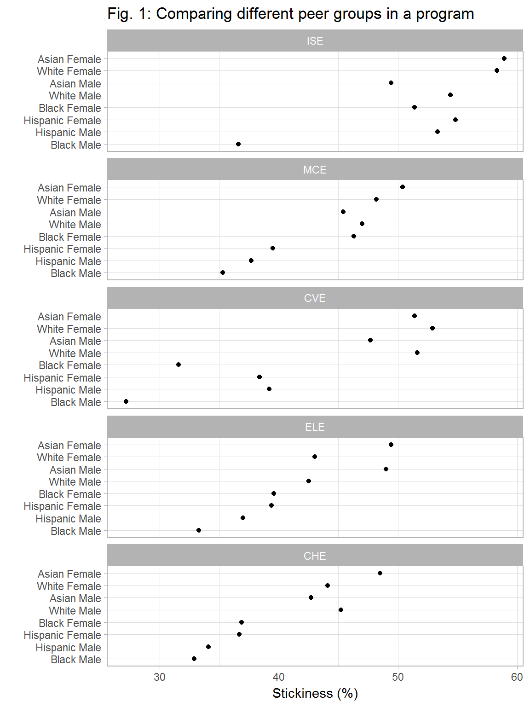
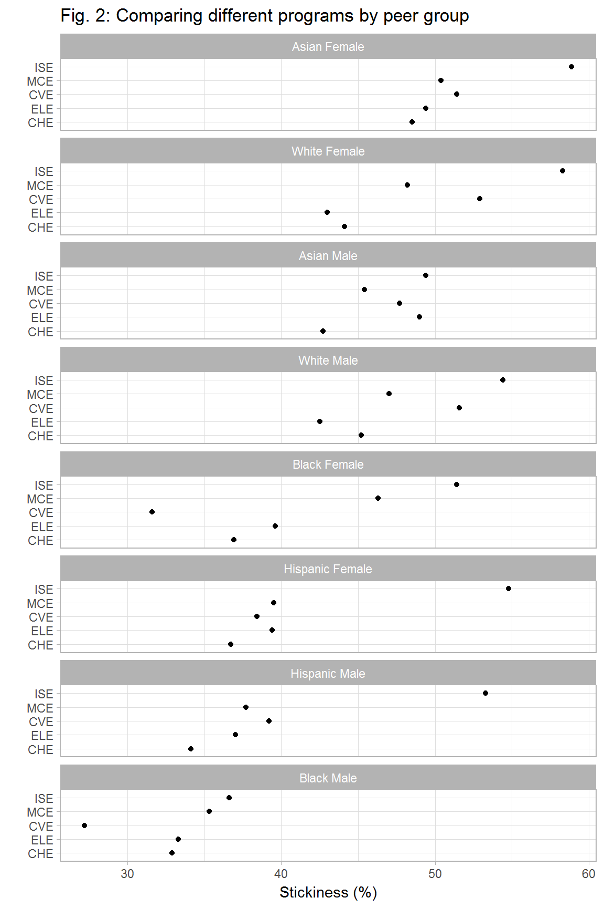

Program “stickiness” is the percentage of all students ever enrolled in a program that graduate in that program. Unlike the graduation rate metric, stickiness includes graduates who start in other programs1.
The data and graphs for stickiness have the same form (multiway) as the data and graphs for graduation rate. Assuming the reader has completed the graduation rate vignette, this vignette is presented with fewer explanatory remarks.
We use the tidy data set case_stickiness (from the midfieldr package) disaggregated by sex, ethnicity, and engineering program with 40 observations and 6 variables.
# packages for manipulating and graphing data
library(ggplot2)
library(tibble)
library(tidyr)
library(dplyr)
# to obtain the example case data
library(midfieldr)
# examine the data structure
glimpse(case_stickiness)
#> Observations: 40
#> Variables: 6
#> $ program <chr> "CHE", "CHE", "CHE", "CHE", "CHE", "CHE", "CHE", "C...
#> $ ethnicity <chr> "Asian", "Black", "Hispanic", "White", "Asian", "Bl...
#> $ sex <chr> "Female", "Female", "Female", "Female", "Male", "Ma...
#> $ ever <dbl> 565, 1376, 245, 4288, 906, 956, 410, 8631, 253, 633...
#> $ grad <dbl> 274, 508, 90, 1889, 387, 315, 140, 3898, 130, 200, ...
#> $ stickiness <dbl> 48.5, 36.9, 36.7, 44.1, 42.7, 32.9, 34.1, 45.2, 51....To see the help page for this sample dataset,
?case_stickinessWe create peer_group, a new categorical variable that combines ethnicity with sex.
case_stickiness <- case_stickiness %>%
unite(peer_group, c(ethnicity, sex), sep = " ")
glimpse(case_stickiness)
#> Observations: 40
#> Variables: 5
#> $ program <chr> "CHE", "CHE", "CHE", "CHE", "CHE", "CHE", "CHE", "C...
#> $ peer_group <chr> "Asian Female", "Black Female", "Hispanic Female", ...
#> $ ever <dbl> 565, 1376, 245, 4288, 906, 956, 410, 8631, 253, 633...
#> $ grad <dbl> 274, 508, 90, 1889, 387, 315, 140, 3898, 130, 200, ...
#> $ stickiness <dbl> 48.5, 36.9, 36.7, 44.1, 42.7, 32.9, 34.1, 45.2, 51....The multiway data are:
program, a categorical variable with 5 levels: Chemical Engineering, Civil Engineering, etc.peer_group, a categorical variable with 8 levels: Asian Female, White Female, etc.stickiness, a quantitative continuous variable between 0% and 100%The first multiway has programs assigned to the panels and peer groups assigned to the rows, facilitating visual comparisons (in a panel) of program stickiness for different peer groups.
multiway1 <- ggplot(data = case_stickiness, aes(y = reorder(peer_group, stickiness, median),
x = stickiness)) +
facet_wrap(~ reorder(program, -stickiness, median), ncol = 1L) +
geom_point() +
labs(title = 'Fig. 1: Comparing different peer groups in a program',
y = '', x = 'Stickiness (%)') +
theme_light()
print(multiway1)
The dual multiway has peer groups assigned to the panels and programs assigned to the rows, facilitating visual comparisons (in a panel) of the stickiness of different programs by peer group.
# swap rows and panels
multiway2 <- multiway1 +
aes(y = reorder(program, stickiness, median), x = stickiness) +
facet_wrap(~ reorder(peer_group, -stickiness, median), ncol = 1L) +
labs(title = 'Fig. 2: Comparing different programs by peer group',
y = '', x = 'Stickiness (%)')
print(multiway2)
The first table shows the three multiway variables in an easy-to-read “wide” form.
# wide form for ease of reading
stickiness_table1 <- case_stickiness %>%
select(peer_group, program, stickiness) %>%
spread(program, stickiness)
# print the table
kable(stickiness_table1, caption = 'Table 1: Program stickiness', row.names = TRUE)| peer_group | CHE | CVE | ELE | ISE | MCE | |
|---|---|---|---|---|---|---|
| 1 | Asian Female | 48.5 | 51.4 | 49.4 | 58.9 | 50.4 |
| 2 | Asian Male | 42.7 | 47.7 | 49.0 | 49.4 | 45.4 |
| 3 | Black Female | 36.9 | 31.6 | 39.6 | 51.4 | 46.3 |
| 4 | Black Male | 32.9 | 27.2 | 33.3 | 36.6 | 35.3 |
| 5 | Hispanic Female | 36.7 | 38.4 | 39.4 | 54.8 | 39.5 |
| 6 | Hispanic Male | 34.1 | 39.2 | 37.0 | 53.3 | 37.7 |
| 7 | White Female | 44.1 | 52.9 | 43.0 | 58.3 | 48.2 |
| 8 | White Male | 45.2 | 51.6 | 42.5 | 54.4 | 47.0 |
The second table shows the data in “tidy” form, that is, one observation per row with one variable per column. The table is longer than the previous table but includes the counts of ever and grad from which the stickiness percentages are computed.
# tidy form for viewing all the variables
stickiness_table2 <- case_stickiness %>%
arrange(program, peer_group)
# print the table
kable(stickiness_table2, caption = 'Table 2: The case_stickiness data set', row.names = TRUE)| program | peer_group | ever | grad | stickiness | |
|---|---|---|---|---|---|
| 1 | CHE | Asian Female | 565 | 274 | 48.5 |
| 2 | CHE | Asian Male | 906 | 387 | 42.7 |
| 3 | CHE | Black Female | 1376 | 508 | 36.9 |
| 4 | CHE | Black Male | 956 | 315 | 32.9 |
| 5 | CHE | Hispanic Female | 245 | 90 | 36.7 |
| 6 | CHE | Hispanic Male | 410 | 140 | 34.1 |
| 7 | CHE | White Female | 4288 | 1889 | 44.1 |
| 8 | CHE | White Male | 8631 | 3898 | 45.2 |
| 9 | CVE | Asian Female | 253 | 130 | 51.4 |
| 10 | CVE | Asian Male | 637 | 304 | 47.7 |
| 11 | CVE | Black Female | 633 | 200 | 31.6 |
| 12 | CVE | Black Male | 1278 | 347 | 27.2 |
| 13 | CVE | Hispanic Female | 216 | 83 | 38.4 |
| 14 | CVE | Hispanic Male | 734 | 288 | 39.2 |
| 15 | CVE | White Female | 3866 | 2044 | 52.9 |
| 16 | CVE | White Male | 15856 | 8180 | 51.6 |
| 17 | ELE | Asian Female | 490 | 242 | 49.4 |
| 18 | ELE | Asian Male | 2931 | 1436 | 49.0 |
| 19 | ELE | Black Female | 1508 | 597 | 39.6 |
| 20 | ELE | Black Male | 3922 | 1305 | 33.3 |
| 21 | ELE | Hispanic Female | 170 | 67 | 39.4 |
| 22 | ELE | Hispanic Male | 1049 | 388 | 37.0 |
| 23 | ELE | White Female | 2029 | 873 | 43.0 |
| 24 | ELE | White Male | 17587 | 7476 | 42.5 |
| 25 | ISE | Asian Female | 514 | 303 | 58.9 |
| 26 | ISE | Asian Male | 961 | 475 | 49.4 |
| 27 | ISE | Black Female | 1167 | 600 | 51.4 |
| 28 | ISE | Black Male | 1290 | 472 | 36.6 |
| 29 | ISE | Hispanic Female | 230 | 126 | 54.8 |
| 30 | ISE | Hispanic Male | 557 | 297 | 53.3 |
| 31 | ISE | White Female | 3332 | 1944 | 58.3 |
| 32 | ISE | White Male | 7167 | 3897 | 54.4 |
| 33 | MCE | Asian Female | 268 | 135 | 50.4 |
| 34 | MCE | Asian Male | 1705 | 774 | 45.4 |
| 35 | MCE | Black Female | 804 | 372 | 46.3 |
| 36 | MCE | Black Male | 2451 | 866 | 35.3 |
| 37 | MCE | Hispanic Female | 162 | 64 | 39.5 |
| 38 | MCE | Hispanic Male | 1083 | 408 | 37.7 |
| 39 | MCE | White Female | 3276 | 1579 | 48.2 |
| 40 | MCE | White Male | 24477 | 11506 | 47.0 |
Ohland MW, Orr MK, Layton RA, Lord SM, & Long RA (2012, October) Introducing stickiness as a versatile metric of engineering persistence, in proc 2012 Frontiers in Education Conference, Seattle, WA.↩